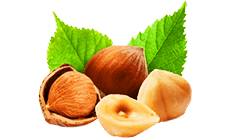
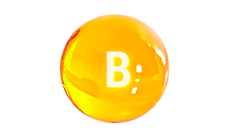
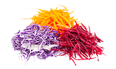

Hordeum Forte the key to men's health
A pill of Hordeum Forte
The power of barley
Unfailing sexual energy for men

The health improvement properties of this cereal have been known since the time of the ancient Romans and Egyptians. In the eighteenth century, no medical tincture could be created without germinated and crushed barley grains. The healers explained this by the fact that these grains have a beneficial effect on the male organism: they satiate, they give vitality, they restore the hormonal balance and they treat genitourinary diseases.
Real ingredients Real results


Barley germinated grains extract
relieves the pain symptoms around the groin and perineum area, helping with the urination process in just 3 hours.
- 
Biotine
eliminates prostate inflammation and reestablishes testosterone levels.
-
Vitamin E
eliminates the infectious and inflammatory processes, whilst restoring the body's natural defenses.
- 
Vitamin B
increases the semen's quantity and sperm activity.
- 
The fiber
absorbs and eliminates toxins from the body that suppress immunity.
Hordeum Forte - guaranteed results without side effects
Hordeum Forte takes care of men's health
The results of Hordeum Forte in treating chronic prostatitis is based on the normalization of blood flow to the prostate, thereby reducing edema and inflammation. From the first days of the treatment of prostatitis, Hordeum Forte provides relief of symptoms. This drug acts directly and has no side effects
It has been proven that Hordeum Forte does not negatively affect the sexual and reproductive functions, which is an important concern for any modern man.
Clinical studies have shown that Hordeum Forte not only has an effective anti-inflammatory effect, but also increases the effectiveness of antibiotics and positively affects spermatogenesis.
The long term use of this medicine does not produce negative effects and there is no way to become addicted.
Treatment with Hordeum Forte allows patients to lead an active lifestyle.
What experts say
Prostatitis is a very serious disease that must be treated immediately. At first, the symptoms may go unnoticed, but the disease is just around the corner. Currently, it is possible to reverse the disease successfully and more easily than ever before. Therefore, the main thing in the treatment is not to skip the initial stage, otherwise, the consequences can be irreversible:
Sexual dysfunction and infertility
Prostate adenoma
Oncological tumors
In order to avoid such complications, I recommend Hordeum Forte to all my clients. Based on my own medical practice, I have come to the conclusion that only this complex produces a significant improvement. The drug begins to act immediately and, day after day, restores the prostate to a healthy state.
The composition of Hordeum Forte allows it to be used for preventive purposes. Thanks to its components, it prevents stagnation and positively affects the blood supply to the prostate and the secretion output of the gland. Therefore, prevention with Hordeum Forte significantly reduces the likelihood of inflammation of the prostate.
With Hordeum Forte, sure you can!
Alexander Bariston
an expert in the field of men's health.
Hordeum Forte will relieve the symptoms of prostatitis more quickly than the traditional methods.
Frequently asked questions
This drug is recommended for those with cases of prostate inflammation. In addition, Hordeum Forte relieves the effects of chronic prostatitis and restores male health. Since this medication is completely natural, there is no age restriction.
Take a capsule 3 times a day during the treatment period.
The high efficiency of the Hordeum Forte phytocomplex is due to a special formula without antibiotics, that positively affects the body.
The plant components, included in the composition of the capsules, have an antimicrobial effect. In addition, they eliminate the inflammatory process that leads to the restoration of the general functions of the reproductive system.
The active components of this drug restore the production of the male hormone, testosterone, and activates blood circulation in the genital area. Hordeum Forte improves blood flow to the penis, which provides a firm and prolonged erection.
It's up to you when you want to ejaculate!
You didn't find your answer?
Our specialists are ready to answer you whenever it's most convenient for you
They have already defeated prostatitis
Michael, 48 years
I started to feel a sharp pain in the perineum and lower back. Then, I saw blood clots in the semen, so I ran to the urologist. It turned out that I had PROSTATITIS. I thought my life was over and spent half a year hopelessly drinking. I thank my friend, who stopped me in time and found these capsules. I'm a new man. I feel great.

Andy, 37 years
Guys, do not leave the problem for later! Otherwise, you will go through the nine circles of hell like me. Every year, I had to undergo a massage and antibiotics treatment - all that lasted 5 years and only then, could I alleviate the discomfort. Thank God, after the Hordeum Forte treatment, all the problems were solved. At last, they have invented a really effective drug!
Mark, 52 years
8 hours ago
A couple of months ago, I began to feel a sharp pain in my scrotum. I knew what was happening, but I did not want to go to the doctor. I endured the pain. What an idiot I've been. The doctor, instead of prescribing a treatment, told me that I had to have an operation. Gray hairs appeared in two days. I went to another doctor, who prescribed Hordeum Forte to me. I completed the treatment and now nothing bothers me.
Hordeum Forte your chance to change your life for better, a 100% victory over prostatitis
-50%{{ old_price }} {{ currency }}
{{ price }} {{ currency }}